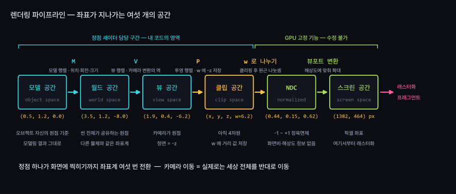
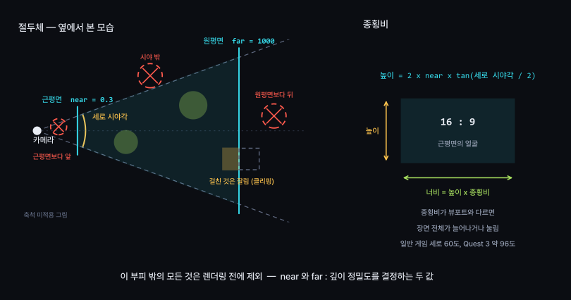
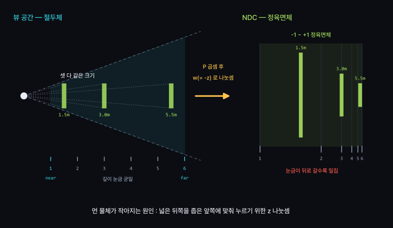
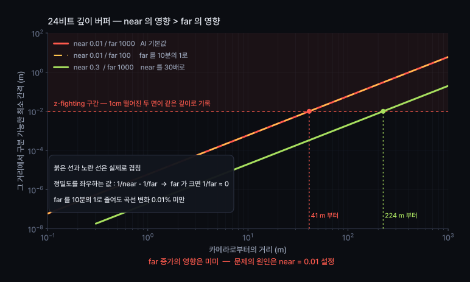
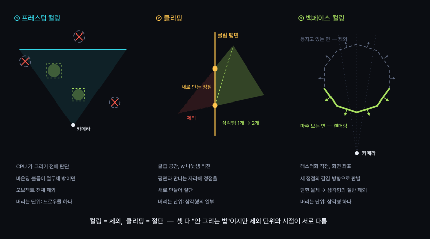
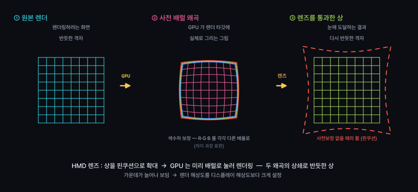
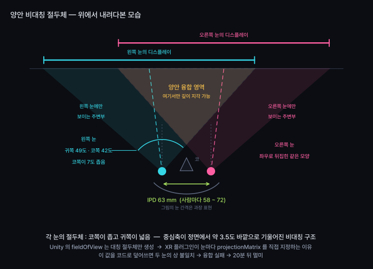

정점 처리와 래스터화, 카메라와 뷰포트, 프로젝션
정점 하나가 픽셀이 되기까지 좌표계 여섯 번 전환 과정 이해
깊이 정밀도를 좌우하는 값 : far 대신 near — 원리 설명
HMD : 의도적으로 일그러뜨린 그림을 두 장 렌더링하는 구조 이해
모델 → 뷰 → 투영 → 클립 → NDC → 화면 · 그 사이에서 버려지는 요소들
2주차 : 4×4 행렬로 물체를 이동·회전·스케일
월드에 물체 배치와 화면 출력은 별개의 단계
오늘의 주제 : 그 행렬에 추가로 곱해지는 행렬
정확히 두 개 추가
뷰 행렬(view matrix)과 투영 행렬(projection matrix)
Unity 인스펙터의 Camera 컴포넌트가 이 둘을 생성

GPU에는 카메라 개념 없음 · 카메라는 항상 원점에서 -Z 방향 응시
실제로 움직이는 대상 : 세상
11주차에서 다시 다룸 · VR에서 카메라 Transform 직접 조작 금지의 근거

| 값 | Unity | 결정 요소 |
|---|---|---|
| 시야각 | fieldOfView | 상자가 벌어지는 각도 · 세로 기준 |
| 종횡비 | aspect | 가로/세로 · 뷰포트 변경 시 함께 변경 |
| 근평면 | nearClipPlane | 이보다 가까우면 잘림 |
| 원평면 | farClipPlane | 이보다 멀면 잘림 |
넷 중 두 개가 도입 질문의 원인 · 어느 쪽인지는 깊이 파트에서 확인
시야각 증가 → 더 넓은 범위 표시 · 대신 화면 가장자리 늘어남 (광각 렌즈 효과)
유색 물체 = 상자 안 · 회색 = 상자 밖 · 드래그로 시점 회전
NDC에는 해상도 정보 없음 · 해상도는 마지막 단계에서 곱셈
같은 씬이 1080p·4K에서 동일한 구도
달라지는 요소는 픽셀 수뿐
뷰포트를 화면 절반으로 지정 → 그 절반 안에 -1~+1 배치
VR의 좌·우 눈이 이 방식으로 한 장의 렌더 타깃을 분할 사용
원리 : 거리로 나눗셈 · 멀수록 -z 증가 → 나눈 결과 감소
문제 : 행렬 곱셈에는 나눗셈 연산이 없음
마지막 행의 -1 → 곱셈 결과의 w 자리에 -z 저장
나눗셈은 클리핑 이후 GPU가 수행 — 원근 나눗셈

절두체 → 정육면체 · 먼 쪽일수록 크게 압축 · 깊이 값도 함께 압축
상자 모양 : 절두체
w = -z 로 나눗셈
멀수록 작아짐 · 사람 눈과 동일
1인칭·3인칭 게임, VR
상자 모양 : 직육면체
w = 1, 나눗셈 없음
거리와 크기 무관
UI, 도면, 아이소메트릭, 그림자맵
VR에서 직교투영 사용 불가 — 두 눈의 시차 생성 불가
10주차 : 화면 고정 UI가 VR에서 작동하지 않는 이유로 연결
깊이 버퍼(depth buffer) : 화면과 같은 크기의 숫자 판
픽셀마다 "지금까지 본 것 중 가장 가까운 거리" 하나씩 기록
그리는 순서와 무관하게 같은 결과
단, 숫자 칸의 개수가 유한
near=0.1, far=1000 → 깊이 값의 절반이 0.1m~0.2m 구간에 배정
나머지 999.8m 구간이 남은 절반을 분할

| near / far | 1/n − 1/f | 100m 에서 Δd | |
|---|---|---|---|
0.01 / 10000 | 100.0 | 60 mm | 깜빡임 |
0.01 / 100 | 99.99 | 60 mm | 동일하게 깜빡임 |
0.3 / 10000 | 3.33 | 2 mm | 정상 |
far 100배 감소 → 변화 없음 · near 30배 증가 → 정밀도 30배 향상
오늘 수업의 핵심 한 줄
청록 = 바닥면 · 분홍 = 그 위 2mm 에 붙인 스티커 · 왼쪽 아래 가까운 쌍은 간격이 같아도 정상
| # | 조치 | 효과 |
|---|---|---|
| 1 | near 증가 · 카메라가 실제로 접근 가능한 최소 거리까지 | 가장 큼 · 대부분 이것으로 해결 |
| 2 | 겹친 면 분리 · 바닥과 데칼을 같은 높이에 두지 않기 | 구조적 해결 |
| 3 | 데칼·간판에 깊이 오프셋 적용 (URP Offset, Decal) | 국소적 해결 |
| 4 | 16비트 깊이 버퍼 사용 여부 확인 | 모바일·Quest에서 실제 발생 |
| 5 | far 감소 | 효과 거의 없음 · 컬링에는 도움 |
순서가 중요 · 5번부터 시도 = 공식을 모른다는 신호

| 시점 | 제거 단위 | 판단 기준 | |
|---|---|---|---|
| 프러스텀 컬링 | CPU · 드로우콜 전 | 오브젝트 전체 | 바운딩 박스가 절두체 밖 |
| 클리핑 | GPU · 원근 나눗셈 전 | 삼각형을 잘라 새로 생성 | 절두체 경계에 걸침 |
| 백페이스 컬링 | GPU · 래스터화 직전 | 삼각형 하나 | 정점 감김 방향이 반대 |
| 오클루전 컬링 | CPU · 사전 계산 | 오브젝트 전체 | 다른 물체에 완전히 가림 |
3주차 11.1ms 예산 상기 · 절두체 축소 = 예산 절약의 가장 저렴한 방법
far 를 줄이는 실제 이유 : 정밀도보다 컬링 효과
래스터화(rasterization) : 삼각형 안의 픽셀 중심을 찾아 프래그먼트 생성
정점의 값(색·법선·UV) → 세 꼭짓점에서 보간 → 각 프래그먼트로 전달
정점 셰이더 실행 횟수 : 정점 수만큼
프래그먼트 셰이더 실행 횟수 : 픽셀 수만큼
4K 화면 = 약 800만 픽셀
같은 조건문 하나라도 프래그먼트 셰이더와 정점 셰이더의 비용 차이 큼
두 장의 렌더링 · 두 장은 서로 비대칭
HMD 화면 위치 : 눈에서 3~5cm 앞
사람 눈은 그 거리에 초점 조절 불가
렌즈 → 화면이 1.5~2m 앞에 있는 것처럼 보이게 함
눈의 수정체가 편하게 이완되는 거리
대가 : 렌즈가 상을 바깥으로 늘림 — 핀쿠션 왜곡
GPU가 미리 반대 방향으로 압축해 렌더링
두 왜곡의 상쇄 → 반듯한 상

배럴 압축 → 중앙부 늘어남
중앙 화질 유지를 위해 디스플레이보다 1.2~1.4배 크게 렌더링 필요
색수차(chromatic aberration) 보정을 위해
R·G·B 를 서로 다른 배율로 왜곡
사실상 샘플링 세 번
왜곡은 렌더링 완료 후 전체 화면에 추가 적용
11.1ms 예산에서 이미 차감되는 몫
개발자가 쓸 수 있는 예산 : 11.1ms 중 일부
합성기(compositor)가 먼저 차지
아이박스(eyebox) : 렌즈가 정상적인 상을 만드는 눈동자 위치 범위
보통 한 변 10mm 남짓
범위 이탈 시 화면 가장자리 어두워짐(비네팅), 색 번짐, 초점 흐려짐
"화질이 나쁘다"는 사용자의 절반 : 헤드셋 착용 불량
14주차 플레이테스트 : 착용 상태 우선 확인
아이박스를 벗어난 사람의 평가 → 콘텐츠 평가로 활용 불가
동공간 거리(IPD) : 성인 기준 58~72mm
평균값 63mm 하나로 모든 사용자 대응 불가
IPD 불일치 → 두 눈의 상 어긋남
뇌가 융합을 위해 계속 부담
IPD 적용 위치 : 렌즈 간격(하드웨어)과
가상 카메라 간격(소프트웨어) 양쪽
둘이 다르면 세상의 크기 감각 왜곡
카메라 간격 임의 확대 → 세상이 장난감처럼 작게 보임

// 하지 말 것 — 대칭 절두체를 강제로 덮어쓴다
cam.fieldOfView = 90f;
cam.projectionMatrix = Matrix4x4.Perspective(90f, 1f, 0.01f, 10000f);
// 해야 할 것 — 눈마다 다른 행렬을 XR 런타임에서 받는다
cam.nearClipPlane = 0.1f; // 이 두 값만 내 몫이다
cam.farClipPlane = 500f;
XR 플러그인 : 눈마다 다른 비대칭 projectionMatrix 직접 주입
코드로 덮어쓰면 두 눈의 상 어긋남 → 융합 실패 → 20분 뒤 멀미
| 방식 | 드로우콜 | 정점 처리 | 비고 |
|---|---|---|---|
| 멀티패스 | ×2 | ×2 | 씬 전체를 두 번 순회 |
| 싱글패스 | ×1 | ×2 | 한 장의 큰 타깃을 좌우로 분할 |
| 싱글패스 인스턴싱 | ×1 | ×2 | 드로우콜 한 번으로 두 눈 동시 처리 · 기본값 |
인스턴싱 적용 후에도 프래그먼트 셰이더는 두 배 실행
픽셀 수는 그대로 · 줄어드는 것은 CPU 쪽 드로우콜
커스텀 셰이더 직접 작성 시 인스턴싱 매크로 누락 주의 → 한쪽 눈에만 렌더링
VR 카메라의 설정 주체 : 헤드셋
개발자가 정하는 값은 near 와 far 뿐
시야각·종횡비·절두체의 좌우 비대칭 모두 헤드셋이 결정
개발자가 정하는 그 두 숫자 = 오늘의 함정
Quest의 near 실용 범위 : 대체로 0.05~0.1 · 손을 얼굴 앞까지 가져오는 경우 고려
이번 주 핵심 : 명세에 숫자로 된 상한선 명시
위험한 이유 : 개발자 화면에서는 정상으로 보임
카메라가 멀리 있고 움직일 때만 드러남
AI의 응답 경향 : 즉시 보이는 실패 회피 우선
나중에 드러나는 정밀도 붕괴는 요구가 없으면 미고려
따라서 명시적 요구 필요 → 명세의 역할
3주차의 네 칸 양식 · 이번 주는 세 번째 칸에 숫자로 된 상한선 추가
"z-fighting 이 없을 것" → 검증 조건으로 부적합
"far/near ≤ 5,000 일 것" → 적합한 검증 조건
전자는 AI와 사람 모두 판정 불가 · 후자는 나눗셈 한 번으로 판정
[목표]
지형 위를 따라다니는 3인칭 카메라. 시야 거리 500m.
[제약]
- 깊이 버퍼는 24비트를 쓴다
- nearClipPlane 은 0.1 이상일 것
- farClipPlane / nearClipPlane 비율이 5,000 을 넘지 않을 것
- 카메라 파라미터는 인스펙터에서 조정 가능할 것
[검증 조건]
- 200m 지점의 바닥 위에 두께 0 인 데칼을 올려 두고
카메라를 좌우로 5초간 흔들었을 때 깜빡이는 픽셀이 0 일 것
- 위 공식 Δd = d²(1/n - 1/f) / 2^24 로 계산한
200m 에서의 Δd 가 5mm 이하일 것
[비목표]
- 충돌 처리, 카메라 흔들림 연출, 후처리는 만들지 말 것
두 검증 조건의 유형 차이 확인
하나는 관찰로 측정, 하나는 계산으로 측정
| # | 실습 | 확인할 개념 |
|---|---|---|
| 1 | z-fighting 의도적 재현 · 200m 지점 바닥 위에 면 하나 겹치기, near=0.01 | 증상 재현 |
| 2 | far 만 10000 → 200 으로 감소 · 증상 유지 확인 후 원인을 한 문장으로 기록 | 1/near − 1/far |
| 3 | near 증가로 해결 · 허용 가능한 최대값을 씬을 보며 결정 | 정밀도와 시야의 맞교환 |
| 4 | AI에게 상한선 없이 카메라 코드 요청 · near/far 기록 후 상한선을 넣어 재요청 | 명세에 따른 결과 변화 |
| 5 | Quest 빌드로 near=0.01 과 near=0.1 비교 · 손을 얼굴 앞으로 가져와 확인 (확장) | VR 의 near 실용 범위 |
1~4 필수, 5 확장 · 제출물 없음, 수업 안에서 완료
| 개념 | 핵심 |
|---|---|
| 파이프라인 | 모델 → 뷰 → 투영 → 클립 → NDC → 화면 · 좌표계 여섯 번 전환 |
| 뷰 행렬 | 카메라 이동 = 세상을 반대 방향으로 이동 |
| 투영 행렬 | w 자리에 -z 저장 · 나눗셈은 이후 GPU가 수행 |
| 원근 | 먼 물체의 축소 = 거리로 나눈 결과 |
| NDC 깊이 | 1/d 곡선 · near 근처에 정밀도 집중 |
| 깊이 정밀도 | Δd = d²(1/n − 1/f) / 2^b · 결정 요인은 near |
| z-fighting | far 감소는 효과 없음 · near 증가로 해결 |
| 컬링 · 클리핑 | 컬링은 제거, 클리핑은 절단 · far 감소의 실제 이점 |
| 래스터화 | 정점 셰이더는 정점 수만큼, 프래그먼트 셰이더는 픽셀 수만큼 실행 |
| 배럴 사전보정 | 렌즈의 늘림에 대응해 GPU가 미리 압축 · 렌더 해상도 1.2~1.4배 |
| 비대칭 절두체 | 두 눈의 절두체는 코쪽이 좁음 · fieldOfView 로는 생성 불가 |
| 싱글패스 인스턴싱 | 드로우콜 한 번 · 프래그먼트는 여전히 두 배 |
이번 주 : 픽셀이 어디에 찍히는가
다음 주 : 그 자리에 어떤 색이 찍히는가
그 색과 깊이 지각의 관계